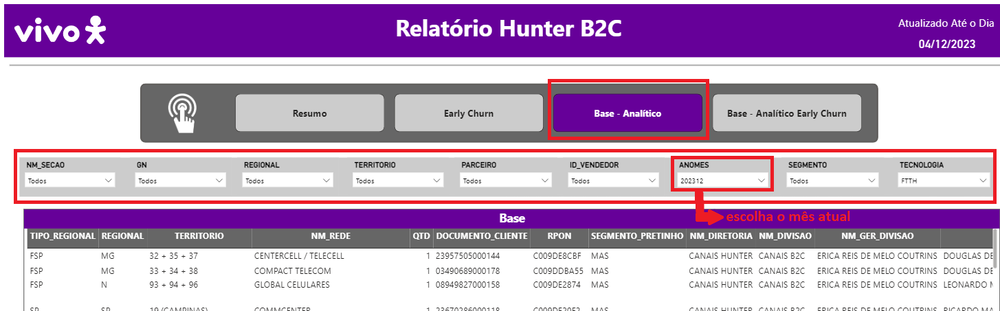
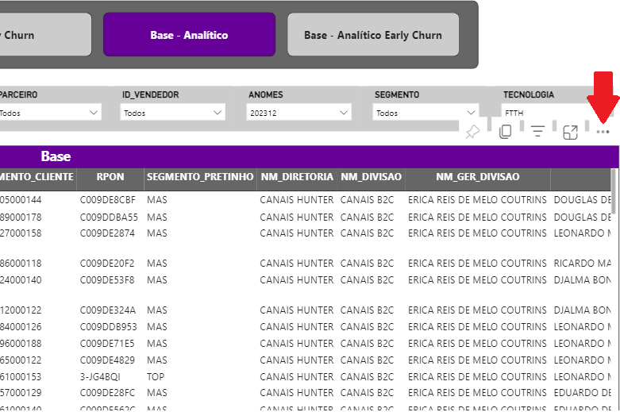
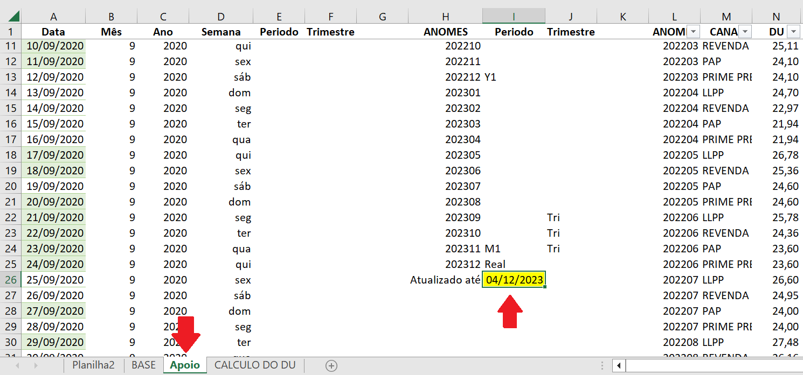
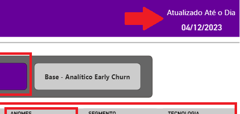
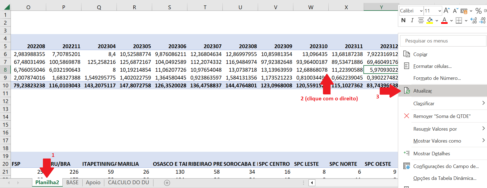
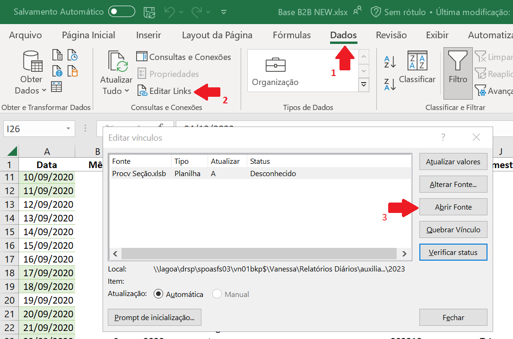

Validação da base hunter - B2B
-
Abra o PowerBI (neste
link)
No menu lateral da esquerda vá em Hunter B2B -> Base – analítico -> na
parte superior central da tela clique no retângulo escrito 'Base
analítico' -> nos filtros deixe marcado todas as opções como ‘todos’,
exceto ANOMES que deve ser o mês atual (como '202310', '202311', etc) e
em TECNOLOGIA deve ser FTTH.

-
O título da tabela está em uma barra roxa logo abaixo dos filtros,
clique no canto direito dessa área, nos 3 pontinhos -> exportar dados ->
dados com layout atual -> exportar
o arquivo vai ser salvo automaticamente na sua pasta de downloads.

-
Abra esse arquivo que foi gerado e verifique se há linhas em branco nas colunas
‘TIPO_REG’ e ‘REGIONAL’. Caso haja, é necessário achar o correspondente dessa linha em
bases dos dias anteriores e preencher com a informação que falta.
*A linha que costuma vir em branco é da cidade 'SANT ANA DO LIVRAMENTO'. Preencha com as informações:
TIPO_REG -> FSP e REGIONAL -> SUL
-
Feito isso, este arquivo deve ser salvo na mesma pasta do arquivo 'Base B2B NEW', com
o nome de 'Base', substituindo o arquivo que já havia ali e que foi
usado no dia anterior. Salve ele com esse novo nome na pasta (neste
link) e feche o arquivo.
Nessa mesma pasta agora abra o arquivo do excel chamado ‘Base B2B NEW’.
-
Neste excel vá na aba ‘Apoio’ e mude a data que está em uma célula
destacada em amarelo para a mesma data que está no powerBI (do passo 1).


-
Vá na aba 'ATUALIZAR' e clique com o direito em qualquer local da tabela e clique em 'atualizar', em seguida
selecione tudo (a partir da linha 3) e copie.
-
Vá na aba ‘BASE’ -> no filtro da coluna A (mês) selecione somente o mês
atual (por exemplo '202310') -> selecione todas as informações que estão
na tabela e apague-as. Remova o filtro e cole o que foi copiado logo abaixo da última linha preenchida.
***ATENÇÃO: ESCOLHA A OPÇÃO 'COLAR VALORES'. NÃO COLE COM AS FÓRMULAS.
-
Em seguida preencha as colunas com as suas respectivas fórmulas, copiando a última linha do mês
anterior e colando nas células em branco do mês atual. (São as colunas de cor azul: G - V - Y - Z - AA - AB - AC).
Agora vamos fazer as alterações manuais:
-
Vá primeiro na coluna H, selecione o filtro ‘SP’, vá na coluna G e
pesquise no filtro as seguintes palavras:
ALEA - VIGGO - GRAMCELL - COMMCENTER - FMO - WESTCEL - LEVYCOM - AMC
- PROJETA - CRONOLOGICA - ITACELL - SAMTEL - TATUI - CEL CELULARES -
TANIA - ARTCELL
Tudo que tiver com esses nomes, mas em alguma variação deles é para
mudar para a palavra certa. Exemplo: se estiver escrito
‘VIGGOSULPR’, mude só para ‘VIGGO’. As palavras mais problemáticas
costumam ser 'ALEA', 'VIGGO' e 'GRAMCELL'.
-
Remova o filtro, vá na coluna D (CANAL), selecione todas as linhas e
aperte ‘CTRL + L’ para substituir a palavra ‘TORDESILHAS’ por ‘PAP’
e clique em 'substituir tudo'.
-
Na coluna I (LOG_VNDR) aplique o filtro para a palavra ‘DIRETO’ e
selecione somente o PREMIUM SP e SÃO PAULO (se tiver, geralmente
este último costuma aparecer na lista mais para o final do mês). Vá
na coluna D (CANAL) e substitua as células escritas ‘LLPP’ por
‘PRIME PRESENCIAL’. Agora vá na coluna Y (Seção) e troque o que
estiver escrito ‘FSP’ por ‘SP’.
-
Remova o filtro novamente. Vá na coluna Y (Seção) e filtre ‘FSP’. Vá
na coluna H (REGIONAL) e filtre ‘SP’ e na K (COD_VENDA) filtre ‘EMBU
DAS ARTES’. Observe na coluna D (CANAL) em quais linhas está escrito
‘PAP’, siga essas linhas até a coluna K e troque a palavra ‘EMBU DAS
ARTES’ por apenas ‘EMBU’.
*ATENÇÃO: na coluna D, nas celulas escritas ‘revenda’ não é para
alterar nada, somente mude as que estiver escrito 'PAP.'
-
Agora vá na aba ‘Planilha 2’ -> clique com o
direito na primeira tabela e ‘atualizar’

-
Remova o filtro -> vá nas ferramentas do excel, em ‘Dados’ -> ‘Editar
links’ -> ‘Abrir fonte’.
*No excel que abrir somente dê ok em todos os avisos e volte no arquivo 'Base B2B NEW' na aba 'BASE',
aplique os filtros na tabela:coluna Y -> 'FSP'
coluna X -> '11 (GSP)', '11 (SPC)', '12 + 13 (LITORAL)', '16 + 17 (RIBEIRAO PRETO)', '19 (CAMPINAS)'
coluna A -> mês atual
E conte quantas linhas tem. Geralmente fica em torno de 20 a 40 (caso dê um número muito mais alto provavelmente não foi atualizado o procv corretamente, ai é necessário fechar o outro arquivo e abri-lo novamente).
***ATENÇÃO: APÓS ESSE PASSO SALVE E FECHE O ARQUIVO E NÃO ABRA MAIS, POIS SENÃO REVERTE ALGUMAS ALTERAÇÕES E CAUSA PROBLEMAS NO PBI!!

-
Estando tudo feito, vá no chat do teams ‘Equipe Indicadores Comerciais - IC’ -> avise o responsável (atualmente é o Rafael Nogueira), que o B2B está pronto e aguarde ele publicar.
Depois que for publicado, vá no PBI (neste
link) e valide as informações (a data, a quantidade total da vivo e da regional SP, comparando com o outro PBI do primeiro passo. E a quantidade de FSP que há dentro de SP na tabela 'Visão por Seção', com o número que foi contado no excel no passo 14).
Estando tudo correto, vá no grupo do teams ('Relatorios & DBM') e envie a mensagem a seguir, colocando a data correta de acordo com o PowerBI:
Base B2B atualizada - informações até 14/11
*Caso tenha alguma divergência ou algum problema na base falar
com Giovanni Caravaggio Guedes Gomes e avisar a Renata.
*ATUALIZAÇÃO DO POWER POINT PARA COMITÊ - DE SEGUNDA E SEXTA*
-
Vá na pasta do comitê semanal (neste
link)
-> 2023 -> mês atual (tipo 'outubro23') -> abra o arquivo do dia atual
-
Vá no slide ‘Performance B2B’ (Costuma ficar aproximadamente no slide
60)
-
Abra o PBI B2B (neste
link)
-
Substitua os prints dos slides com essa versão atualizada:
-visão DU -> tabelas -> visão por território (é a segunda tabela da
esquerda, printe somente ela)
-visão acumulada -> tabelas -> visão por território (é a segunda tabela
da esquerda, printe somente ela)
-
Atualize a data que está escrita no cantinho superior da direita desse
slide
- Avise no grupo 'Comite e PS' que o slide de B2B está ok
**TODO COMEÇO DE MÊS**
Ao início de um novo mês é necessário fazer alguns ajustes nos arquivos,
somente uma vez.
-
Primeiro crie a pasta para o novo mês, em sequência das pastas
anteriores e copie todos os arquivos do mês passado para a pasta do mês
atual.
-
Vá no excel ‘Base B2B NEW’ -> na aba ‘CALCULO DO DU’ -> copie as colunas
B, C, D e as 3 ultimas linhas e cole abaixo (isso vai criar uma tabela
nova para o mês atual, assim como acima, dos meses anteriores).
-
Vá na pasta .../Vanessa/Relatorios diários/ auxiliares/Apoio/2023 e abra
o arquivo do excel ‘DU 2023 VIC’ -> vá na aba ‘Detalhados DUs (2023)’ ->
vá até o mês atual e copie as 3 linhas (LLPP, REVENDA e PAP) (todos os
dias, do primeiro ao ultimo do mês, menos a ultima coluna de 'total') e
cole na coluna E do ‘CALCULO DO DU’
*OBS: esse processo vai montar a estrutura para o mês atual, e os
valores de cada dia vão sendo preenchidos por fórmula dinâmica não sendo
necessário mais nenhuma alteração após isso estar feito
-
Ainda neste excel ‘Base B2B NEW’, vá na aba ‘Apoio’ e copie as 4 ultimas
linhas das colunas L e M e cole logo abaixo, mudando o número do mês
para o atual. E para a coluna N, preencha com os valores da aba ‘CALCULO
DO DU’, copie os 3 valores que estão na coluna C do mês atual (que no
momento vão estar zerados mesmo) e cole no local (e também copie o valor
que estiver no PAP e cole na linha do PRIME PRESENCIAL)
-
E por fim, ainda na aba de ‘Apoio’, nas colunas H, I, J desça uma linha
os valores. (Ou seja, faça uma linha nova para o mês atual, por exemplo
'202311', a linha em amarelo onde é colocada a data todos os dias desce
para ficar abaixo desse mês novo e os valores que estão nas colunas I e
J também descem uma linha, assim fica o mês atual com valor ‘Real’ e os
3 meses anteriores como valor ‘Tri’)